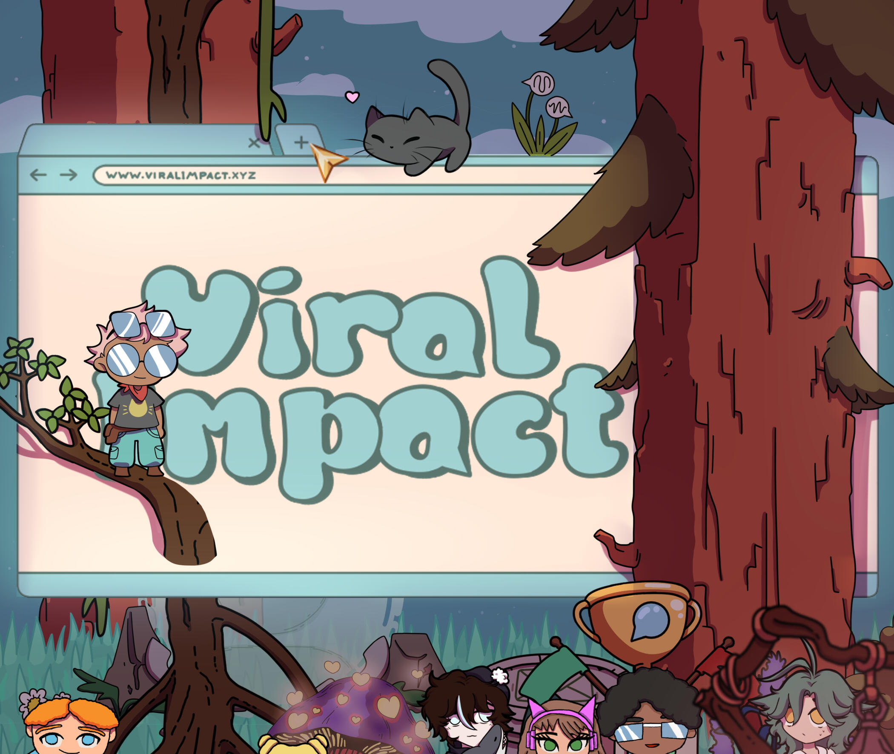
THE BRIEF
GameLab Oost collaborated with 's Heeren Loo to develop an educational game that helps people with a mild intellectual disability learn appropriate online communication. Built in Unity, the game uses a roguelike structure with randomly generated levels, combining action-based gameplay with conversation-focused learning moments at the end of each stage. After successful testing and positive feedback in an earlier build, the project moved into a new development phase, and that's when I joined.
My role focused on expanding the existing foundation by adding new features and mechanics, with the goal of preparing the game for a partner studio to finalize and bring to market.
GAMEPLAY
Players explore levels themed around different social media platforms, fighting their way through enemies to reach the people who are lost online. Once they get there, they help these people by chatting through a dialogue system designed to teach a simple but important lesson: it isn't only what you say that matters, but how you say it. The game asks players to navigate conversational challenges, help people in trouble, and steer clear of trouble-makers and scammers along the way.
MY ROLE
On a team of 7 (2 designers, 2 artists, 2 engineers, plus me), I wore three hats: Sound Designer, Level Designer, and Mechanic Designer. The dual track meant my day could swing from building an FMOD event in the morning to greyboxing a new level layout in the afternoon, and that crossover shaped a lot of the decisions in this project.
SOUND DESIGN
All music, ambience and SFX were built in Ableton Live, then implemented through FMOD and wired into Unity via scripting. The audio work covered:
- Collecting and creating SFX in Ableton from recorded sources and synthesis.
- Editing and processing SFX so each sound stayed punchy without ever feeling harsh on the MID audience.
- FMOD implementation of every event, including parameters that drive variation and intensity from gameplay.
- Scripting audio triggers in Unity so the right sound fires from the right game state.
- Composing background music that supports each social media themed level without competing with the dialogue.
Designing for players with mild intellectual disability set the tone for every choice. SFX had to be unambiguous (every action should sound like exactly what it is), and music had to stay supportive rather than overwhelming. That constraint quietly made the audio better across the board.
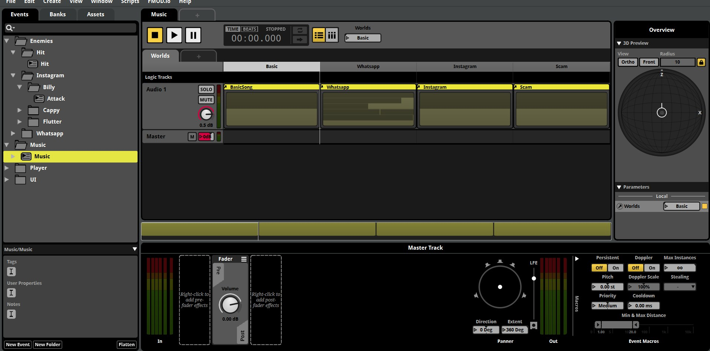
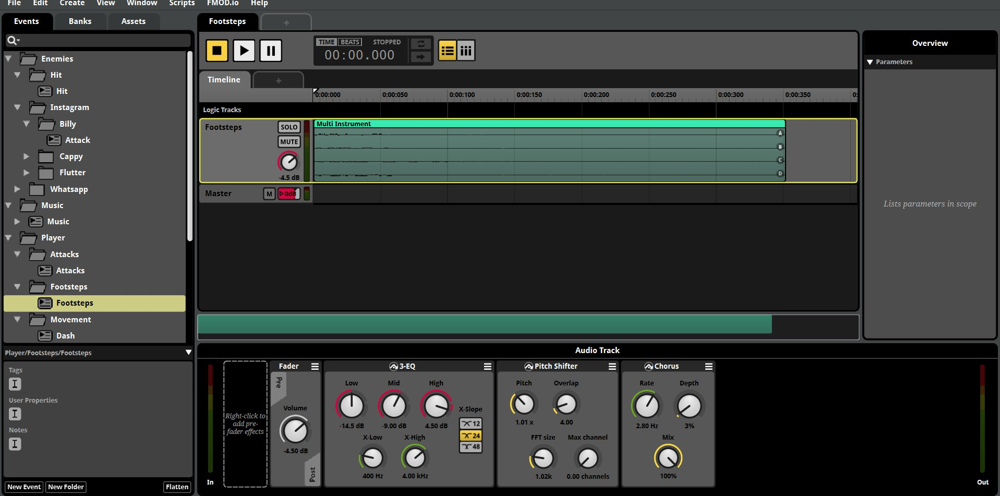
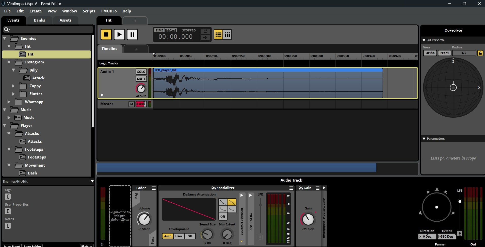
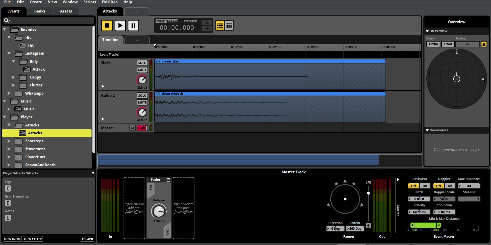
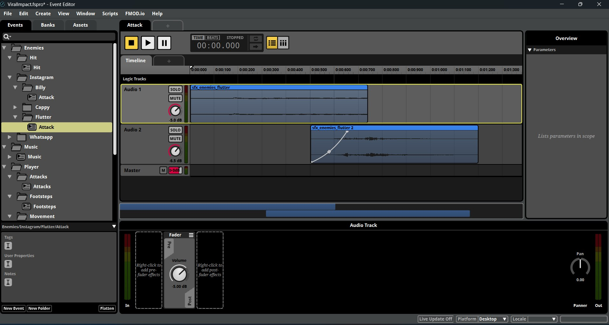
LEVEL & MECHANIC DESIGN
Outside the audio booth, I worked on the gameplay side as well. I designed 24 level layouts across the different social media themed worlds, tuning pacing so each run felt fresh inside the roguelike structure but never unfair for the target audience. Alongside that I prototyped new mechanics, taking them from rough concept to playable feature so the team could test them in the real loop.
Wearing both the design and audio hats was useful here. I could greybox a level with placeholder triggers, then immediately wire the audio to those triggers in FMOD without a handover step.
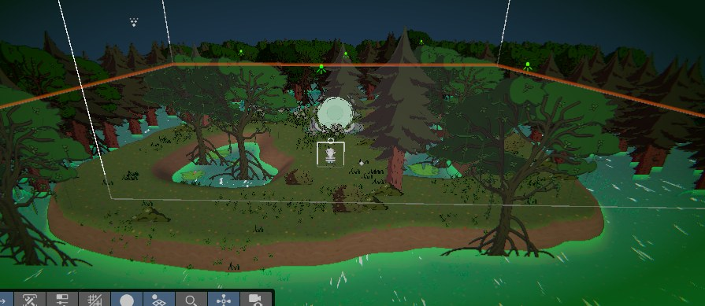
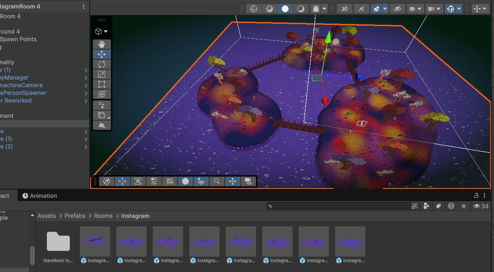
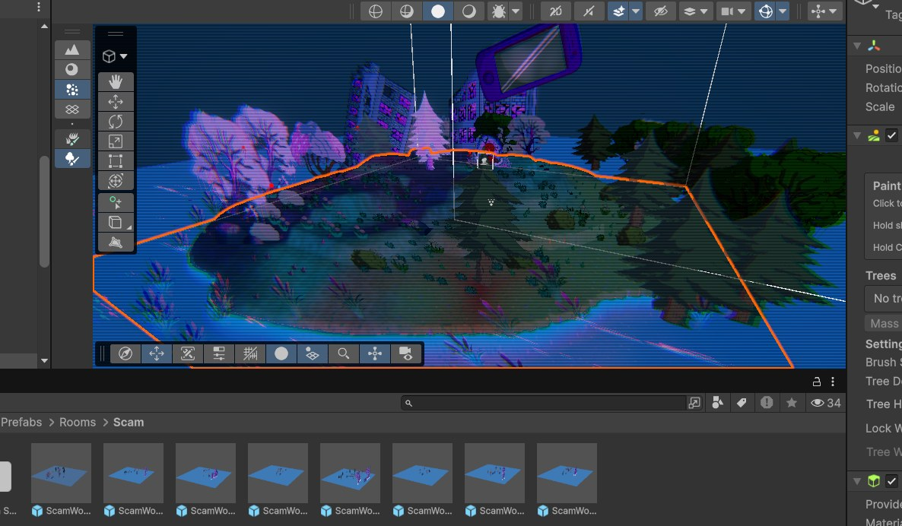
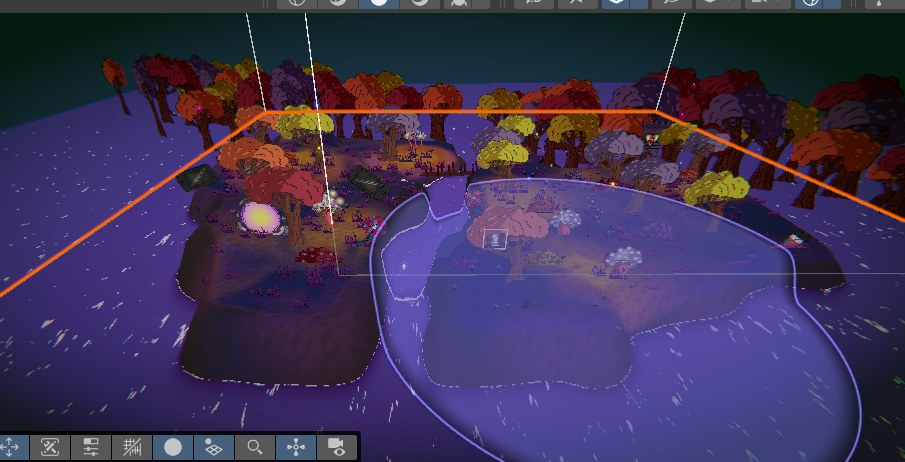
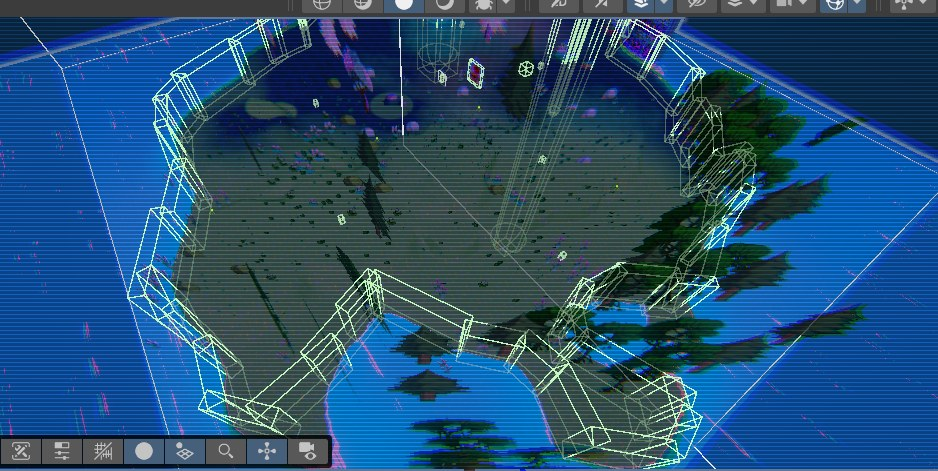
HOW I MADE IT
How the audio identity and the levels came together on this build:
- Built all the SFX and music in Ableton Live, from recorded sources and Serum synthesis.
- Set up per-world music that swaps on a Worlds parameter in FMOD (Basic, WhatsApp, Instagram, Scam) so the score follows the player without a hard cut.
- Layered and processed the SFX for player, UI, enemies, and environment, adding pitch and timbre variation so repeats never sound mechanical.
- Implemented all audio through FMOD and Unity, with event logic, parameters, and a centralized AudioManager to keep integration and iteration fast.
- Designed 24 level layouts across the themed worlds, greyboxing each one and then wiring the audio straight to the triggers.
- Tuned everything for the target audience, keeping sounds unambiguous and the music supportive rather than overwhelming.
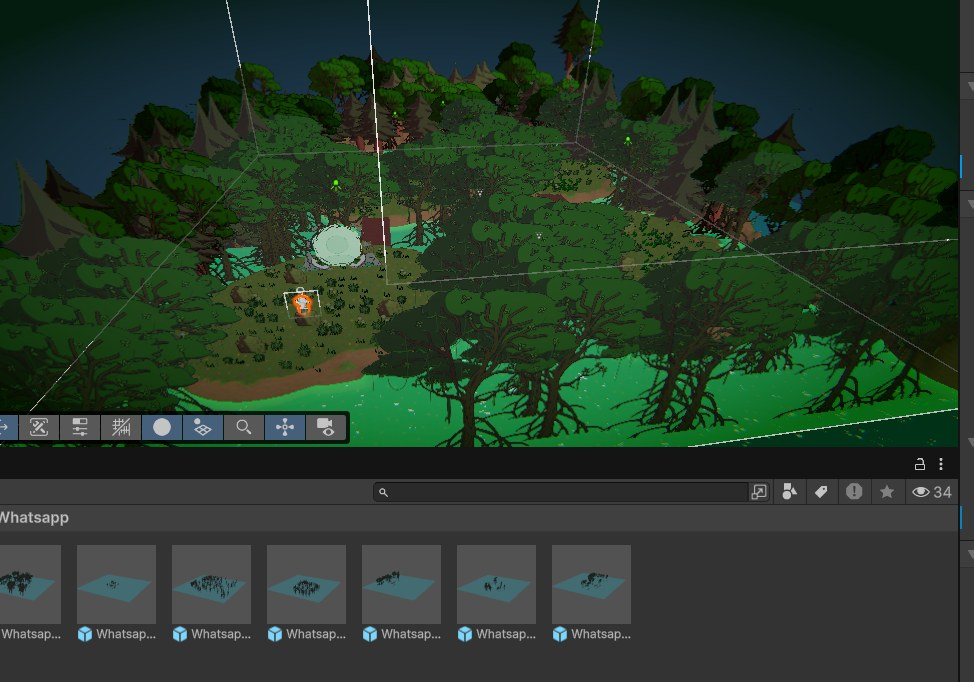
PROJECT DOCUMENTS
The design documents behind Viral Impact, embedded below. The Sound Design Document is the one I wrote; the others are the team's shared design docs. Use the toolbar in each viewer to page and zoom, or open any of them full screen.